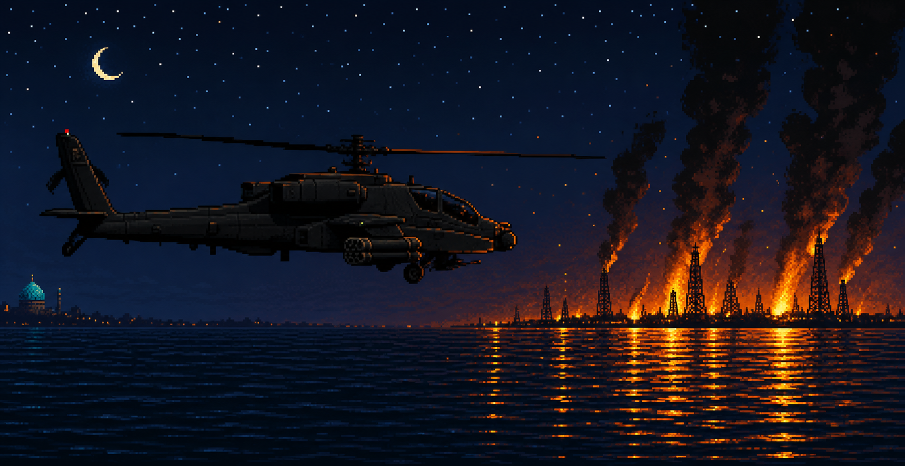

Games for formats the industry buried. We dug them up.

An alternate-history 1990s gulf war that never happened. A Desert Strike–style rotary-wing war crossed with base-building: four seasonal campaigns, living weather, a destructible country, and a sea that fights back.
Enter the war room — persianstrike.com →Dead Format Games is an independent studio with a soft spot for the machines and genres the industry left behind — cartridge-era strike games, cassette mixtapes, and action movies that play it 90% straight. We build small, dense, physical worlds in the free and open-source Godot Engine, on a simple release policy: it ships when it's done.